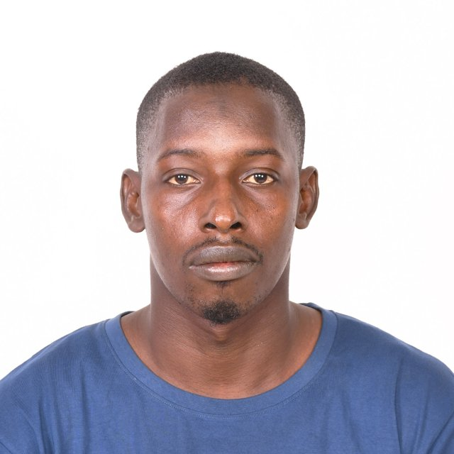

Bonjour, c'est Moussa
Je suis
Géographe et spécialiste SIG, j'ai plus de huit ans d'expérience dans la conception, la collecte, la gestion et l'analyse de données pour des projets environnementaux, de conservation et d'infrastructures en Guinée et en Afrique de l'Ouest.
J'ai travaillé notamment avec UNOPS, la Wild Chimpanzee Foundation, AGRECO, Rainforest Builder, MSF et le PRACC-GF : outils de collecte numérique (KoBoToolbox, XLSForm, ODK), bases de données (PostgreSQL/PostGIS, ArcGIS Online), cartographie, suivi-évaluation, tableaux de bord et encadrement d'équipes. J'interviens aussi comme formateur auprès de techniciens et de consultants.
Affiliations
- Depuis 2021 : membre et responsable SIG de l'Association des Jeunes pour la Restauration Écologique (AJRE)
- Depuis 2020 : membre actif du Réseau des Professionnels Africains de la Géomatique (RPAG)
- Depuis 2017 : membre actif de la communauté OpenStreetMap Guinée et responsable mobilisation de l'ONG FreeLocalMappers Guinée
- Depuis 2016 : membre actif de l'Association des Jeunes Ressortissant(e)s Ami(e)s pour le Développement de Mandiana (AJRADM)
Disponible pour un nouveau challenge • Disponible pour un nouveau challenge • Disponible pour un nouveau challenge • Disponible pour un nouveau challenge • Disponible pour un nouveau challenge • Disponible pour un nouveau challenge • Disponible pour un nouveau challenge • Disponible pour un nouveau challenge • Disponible pour un nouveau challenge • Disponible pour un nouveau challenge • Disponible pour un nouveau challenge • Disponible pour un nouveau challenge •